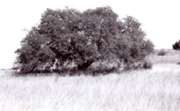

|  |
|
| |
|
By © Nol Ward Ideal community means different things to different people and cultures, and may be described in many different ways. My vision of an ideal community gives people an opportunity to live their life in a way that is financially rewarding, ecologically responsible, and socially acceptable, and in a way that can be sustained over an indefinite period of time without destroying our country's agriculturally and ecologically important rangelands Comment - My vision of an ideal community is sometimes referred to as a sustainable ranch, sustainable ranching community, or simply as a sustainable way of living on the plains and prairies of North America. My vision of an ideal community offers people a way of life that is simpler, more fulfilling, and is free from the hierarchy, wastefulness, and crowds of a "disposable society" and their agriculturally and ecologically destructive lifestyles, which despite their material abundance, are often dissatisfying. Members of the community are peaceful, hardworking people that depend on each other to preserve their cultural heritage and traditional way of life. They have common goals and work actively to reach them. They adhere to a strict code of moral standards and land ethics. My vision of an ideal community offers people the pleasures of natural scenery, wide-open spaces, and leisure time with family, friends, and acquaintances. In addition, the community provides opportunity and encouragement for people to improve themselves intellectually, artistically, morally and spiritually, and do so throughout their lives. In a hands-on way, members of the community learn about their relationship with each other, and their relationship with the natural world. By participating in producing their own food, fiber, and other necessities of life, members of the community develop a close appreciation for the natural resources -- soil, water, plants, and animals -- in which they dependent on for their survival. My vision of an ideal community is managed by conservation-minded professionals with years of training and working experience, and demonstrate exceptional leadership ability. They develop and maintain close ties with community members, and treat everyone in the community with respect. They encourage giving community members opportunities and encouragement to excel in everything they do. In addition, they are dedicated to permanently protecting the agricultural and ecological integrity of the community for the benefit of both present and future generations. My vision of an ideal community strives to be self-sufficient in functional housing, healthy food, natural fiber, clean water, clean energy, domestic animals, and other grazing culture and pastoral way of life necessities. To the greatest extent possible, the community produces, constructs, or procures their cultural and lifestyle necessitates in a natural resource conserving and environmental responsible manner, at the lowest feasible cost and risk -- including financial, climatic, political, and social. Last but not least, my vision of an ideal community serves as an ecological buffer against long-term climate change and an intensified rate of global warming. It also serves as a safeguard against absolute dependency on financial and market conditions that are beyond the control of any one individual or group. Under worst conditions, my vision of an ideal community serves as a refuge from the poverty, famine, hunger, disease, and anarchy created by a devastating agricultural and ecological disaster. People often tell me that my vision of a ideal community perfectly describes their personal cultural and lifestyle ambition. But, sad to say, most of the people I've talked to over the years don't understand that my vision of an ideal community requires people to forgo cultural and lifestyle ambitions that are self-centered, greedy, hierarchical, high consuming, wasteful, and ultimately short-lived. Or, in other words, that are high-input, high-risk, natural resource degrading, land fragmenting, environmentally polluting, and unsustainable. Date of first copyright was October 1994. The author, Nol Ward, is a retired small independent rancher, professional ranch manager, and beef cattle consultant. His e-mail address is: nol@consolidated.net |
|
|
Back to TRC's recommended reading | |
|
http://www.texasranchingconservancy.com/community.html | |